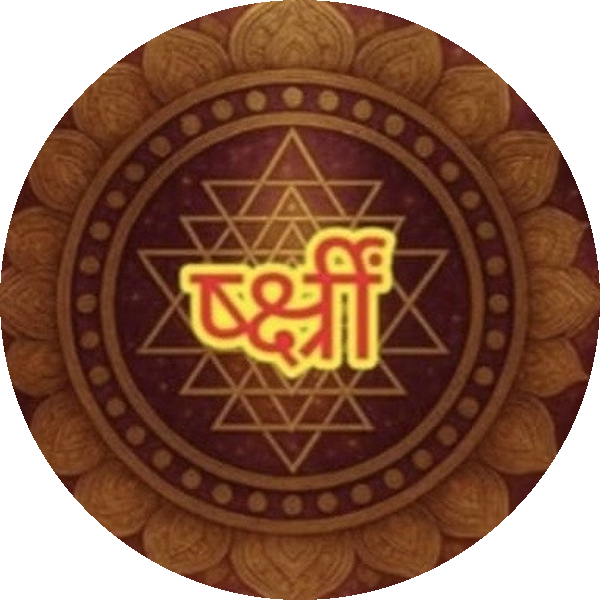

A two-hour class on where beej mantras come from, how Sanskrit letters map onto the body, a hands-on writing experiment, and the group project to rebuild Durga Saptashati with new beej mantras before Navratri.
Made from the video's auto-generated Hindi captions. Sanskrit letter names are sometimes misheard in captions, so some letters below are written the way the class normally uses them (for example ष of षट्कोण, क्ष of क्षत्रिय). The ideas and results are Dr. Gaurav Shukla's own model as presented in class. Each slide links to that moment in the video so you can check it.